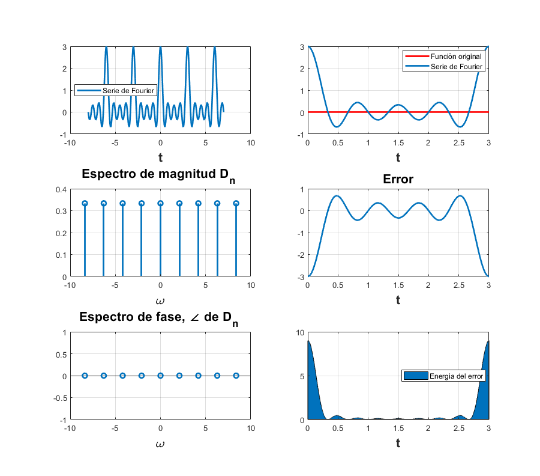

Práctica 5: Convolución y Correlación de señales en tiempo continuo
Grupo: 2TV1
Unidad de aprendizaje: Señales y Sistemas
Alumnos:
Aparicio Espinoza Octavio Joel
Gonzalez Plata Jose Enrique
Morales Rodriguez Diego Emilio
Morales Vazquez Pedro Benigno
Profesor: Dr. Rafael Martínez Martínez
Contents
Objetivos
- Realizar gráficas de series de Fourier exponenciales y trigonométricas en tiempo continuo
- Manipulación de instrucciones en MATLAB
- Calculo númerico de los coeficientes de Fourier
Introducción
Podemos calcular el coeficiente de la serie exponencial de Fourier () numéricamente mediante el uso de la transformada discreta de Fourier, que utiliza las muestras de una señal periódica durante un cierto período. El intervalo de muestreo es de segundos. Por lo tanto, hay número de muestras en un período . Para encontrar la relación entre y las muestras de
donde es la k muestra de y
En la práctica, es imposible que entonces calculamos el lado derecho de la ecuación . Podemos hacer pequeña, pero no cero, lo que hará que los datos aumenten sin límite. Por lo tanto, ignoraremos el límite de en la ecuación con el entendimiento implícito de que es razonablemente pequeño. El valor distinto de cero en dará como resultado algún error de cálculo, que es inevitable en cualquier evaluación numérica de una integral, el error resultante de una distinta de cero se denomina error de aliasing: este proceso de define como la alteracion de la percepcion de un determinado movimiento a traves de nuestra percepcion o de cualquier optica, por ejemplo cuando vamos andando por la calle y al mirar la llanta de un vehiculo tenemos la percepcion de que mueve en sentido contrario, es decir el vehiculo se mueve haia adelante pero las ruedas es como si se movieran hacia atras.
Por lo tanto, podemos expresarla como
Ahora, desde la ecuacion , . Por lo tanto,  y de la ecuación se deduce que
y de la ecuación se deduce que
La propiedad de periodicidad significa que más allá de , los coeficientes representan los valores para n negativo. Por ejemplo, cuando . El ciclo se repite de nuevo desde %
Ejemplo 6.1
Sea la señal
Tenemos que :

Con y 
Código para 4 armonicos
clc; t0=0; % Valor inicial para calcular la serie % armo número de armonicos a utilizar en la gráfica % a, b intevalo para realizar la grafica de la serie tf=pi;% Valor final donde calcular la serie T=tf-t0;% Periodo de la función f=@(t) exp(-t/2); % Función original a0=(2/T)*integral(@(t)exp(-t/2),t0,tf); % Coeficiente a0 de la forma trigonometrica an=@(n) (2/T)*integral(@(t) exp(-t/2).*cos(2*pi*n*t/T),t0,tf); % Coeficiente an de la forma trigonometrica bn=@(n) (2/T)*integral(@(t) exp(-t/2).*sin(2*pi*n*t/T),t0,tf); % Coeficiente bn de la forma trigonometrica armo=4; % Numero de armonicos a=-2*pi; b=3*pi; % a, b intevalo para realizar la grafica de la serie sft(t0,tf,an,a0,bn,f,armo,a,b) % función modificada para la forma trigonometrica
código para 15 armonicos
armo=15; sft(t0,tf,an,a0,bn,f,armo,a,b)
Ejemplo 6.2
Sea la señal
Tenemos que :
Con y
Código para 4 armonicos
t0=-0.5; % Valor inicial para calcular la serie % armo número de armonicos a utilizar en la gráfica % a, b intevalo para realizar la grafica de la serie tf=1.5;% Valor final donde calcular la serie f=@(t) (6*t).*(-1/2<t & t<1/2)+(6*(1-t)).*(1/2<=t & t<3/2); armo=4; % Numero de armonicos d0=0; dn=@(n) (-12/(n.^2*pi.^2))*sin((n*pi)/2)*1j; a=-4; b=6; % a, b intevalo para realizar la grafica de la serie sfc(t0,tf,dn,d0,f,armo,a,b)
código para 15 armonicos
armo=15; sfc(t0,tf,dn,d0,f,armo,a,b)
Ejemplo 6.4
Tenemos la señal
con:
Código para 4 armonicos
t0=-pi; % Valor inicial para calcular la serie % armo número de armonicos a utilizar en la gráfica % a, b intevalo para realizar la grafica de la serie tf=pi;% Valor final donde calcular la serie f=@(t) 1.*(-pi/2<t & t<pi/2); armo=4; % Numero de armonicos d0=1/2; dn=@(n)(1/(n*pi))*sin((n*pi)/2); a=-5*pi; b=5*pi; % a, b intevalo para realizar la grafica de la serie sfc(t0,tf,dn,d0,f,armo,a,b) % código para 15 armonicos armo=15; sfc(t0,tf,dn,d0,f,armo,a,b)
Ejemplo 6.5
Sea la señal
Tenemos que :
Código para 4 armonicos
t0=0; % Valor inicial para calcular la serie % armo número de armonicos a utilizar en la gráfica % a, b intevalo para realizar la grafica de la serie tf=pi;% Valor final donde calcular la serie f=@(t) exp(-t/2); armo=4; % Numero de armonicos d0=1/2; dn=@(n)(0.504/(1+1j*4*n)); a=-2*pi; b=3*pi; % a, b intevalo para realizar la grafica de la serie sfc(t0,tf,dn,d0,f,armo,a,b) % código para 15 armonicos armo=15; sfc(t0,tf,dn,d0,f,armo,a,b)
Ejemplo 6.7
Sea la señal el tren de pulsos con .
Tenemos que :

Código para 4 armonicos
t0=0; % Valor inicial para calcular la serie % armo número de armonicos a utilizar en la gráfica % a, b intevalo para realizar la grafica de la serie tf=3;% Valor final donde calcular la serie f=@(t) 1.*(t==0 & t==3)+0.*(t<0 & t>0 & t<3 & t>3); armo=4; % Numero de armonicos d0=1/3; dn=@(n) 1/3; a=-8; b=7; % a, b intevalo para realizar la grafica de la serie sfc(t0,tf,dn,d0,f,armo,a,b)
código para 15 armonicos
armo=15; sfc(t0,tf,dn,d0,f,armo,a,b)
Ejemplo para computadora C6.2
f=@(t) exp(-t/2); t=-10:0.001:10; plot(t,f(mod(t,pi))) %%señal periodica sumterms = zeros(15, length(t)); sumterms(1,:) = 0.504; for n = 1:size(sumterms,1)-1; sumterms(n+1,:) = 0.504/(1+4*n*1j).*exp(2*n*t*1j); end x_N = cumsum (sumterms); figure(1); clf; ind = 0; for N = [0,1:2:size(sumterms, 1)-1],ind = ind+1; subplot (3,3,ind); plot (t,x_N(N+1,:), 'k',t,f(mod(t,pi))+0j, 'k--'); axis ([-10 10 -0.5 1.5]); xlabel ('t'); ylabel (['x_{',num2str(N),'} (t)']); end %
Warning: Imaginary parts of complex X and/or Y arguments ignored Warning: Imaginary parts of complex X and/or Y arguments ignored Warning: Imaginary parts of complex X and/or Y arguments ignored Warning: Imaginary parts of complex X and/or Y arguments ignored Warning: Imaginary parts of complex X and/or Y arguments ignored Warning: Imaginary parts of complex X and/or Y arguments ignored Warning: Imaginary parts of complex X and/or Y arguments ignored
Aproximación de coeficientes
codigo para trapecio compuesto
function r=trapecio(f,a,b) % f: función a integrar % [a,b] Intervalo de integración n=15; h=(b-a)/n; u=(b-a)/2; sum=0; ft=sym(f); for l=1:1:(n-1) sum=sum+f(a+l*h); end ddf=diff(diff(ft)); fu=matlabFunction(ddf); r=(h/2)*(f(a)+f(b))+h*sum-(((b-a)/12)*h^2)*fu(u); end
Usando la misma función que lathi en el ejemplo C6.4 y 6.1 la señal es
Corriendo el código para calcular los 5 primeros coeficientes:
T_0=pi; W_0=2*pi/T_0; DT_0=trapecio(@(t) exp(-t/2),0,pi)/pi; DT_1=trapecio(@(t) exp(-t/2)*exp(-1j*W_0*t),0,pi)/pi; DT_2=trapecio(@(t) exp(-t/2)*exp(-2j*W_0*t),0,pi)/pi; DT_3=trapecio(@(t) exp(-t/2)*exp(-3j*W_0*t),0,pi)/pi; DT_4=trapecio(@(t) exp(-t/2)*exp(-4j*W_0*t),0,pi)/pi; DT_n=[DT_0,DT_1,DT_2,DT_3,DT_4]; magnitudTrapecio=abs(DT_n);
Código de Lathi:
T_0 = pi; N_0 = 256; T = T_0/N_0; t = (0:T:T*(N_0-1))'; M = 10; x = exp(-t/2); x(1) = (exp(-pi/2) + 1)/2; D_n = fft (x)/N_0; n = [-N_0/2:N_0/2-1]'; clf; subplot (2, 2, 1); stem(n, abs(fftshift (D_n)),'k'); axis ([-M M -.1 .6]); xlabel('n'); ylabel('|D_n|'); subplot (2, 2, 2); stem(n, angle(fftshift(D_n)),'k'); axis([-M M -pi pi]); xlabel ('n'); ylabel('\angle D n [rad]'); n = [0:M]; C_n(1) = abs(D_n(1)); C_n(2:M+1) = 2*abs (D_n(2:M+1)); theta_n(1) = angle(D_n(1)); theta_n(2:M+1) = angle(D_n(2:M+1)); subplot (2, 2, 3); stem(n,C_n,'k'); xlabel ('n'); ylabel('C_n'); subplot (2, 2, 4); stem(n,theta_n,'k'); xlabel ('n'); ylabel('\theta n [rad]'); clear magnitudLathi for a = 1:1:5 magnitudTransformada(a)=abs(fftshift(D_n(a))); end %
De forma exacta sabemos que por el ejemplo 6.5. Aplicando código para los coeficientes exactos:
DE_n(1)=0.504; for n=2:1:5 DE_n(n)=abs(0.504/(1+4j*(n-1))); end
comparando los metodos
T = table(magnitudTrapecio',magnitudTransformada',DE_n');T(1:5,:);
T.Properties.RowNames = {'D0','D1','D2','D3','D4'};
T.Properties.VariableNames{'Var1'} = 'Trapecio';
T.Properties.VariableNames{'Var2'} = 'Transformada';
T.Properties.VariableNames{'Var3'} = 'Exacta'
T =
5×3 table
Trapecio Transformada Exacta
________ ____________ ________
D0 0.50432 0.50428 0.504
D1 0.11596 0.1223 0.12224
D2 0.073584 0.062536 0.062514
D3 0.061407 0.041859 0.041855
D4 0.11486 0.031431 0.031439
Diferencia entre ambos metodos y el valor exacto:
DiferenciaTrapecio=abs(magnitudTrapecio-DE_n);
DiferenciaTransformada=abs(magnitudTransformada-DE_n);
T = table(DiferenciaTrapecio',DiferenciaLathi');T(1:5,:);
T.Properties.RowNames = {'D0','D1','D2','D3','D4'};
T.Properties.VariableNames{'Var1'} = 'Trapecio';
T.Properties.VariableNames{'Var2'} = 'Transformada'
T =
5×2 table
Trapecio Transformada
__________ ____________
D0 0.00032362 0.00028111
D1 0.0062798 6.2039e-05
D2 0.011071 2.2307e-05
D3 0.019552 4.4227e-06
D4 0.083424 7.7341e-06
como se puede notar el método por la transformada discreta de Fourier(TDF) se acerca más y tiene menos error que a diferencia del Trapecio, entonces es más exacta.